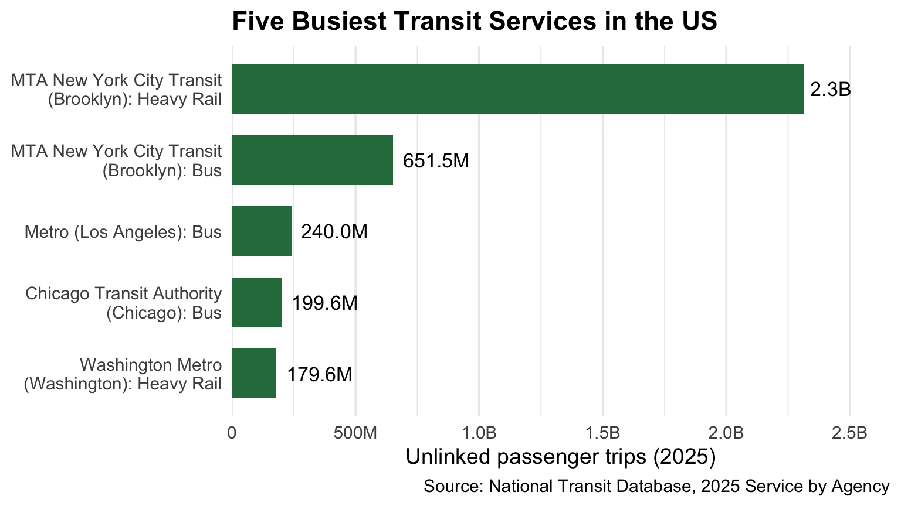
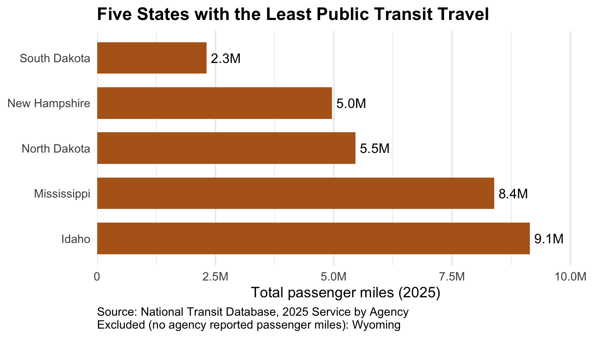
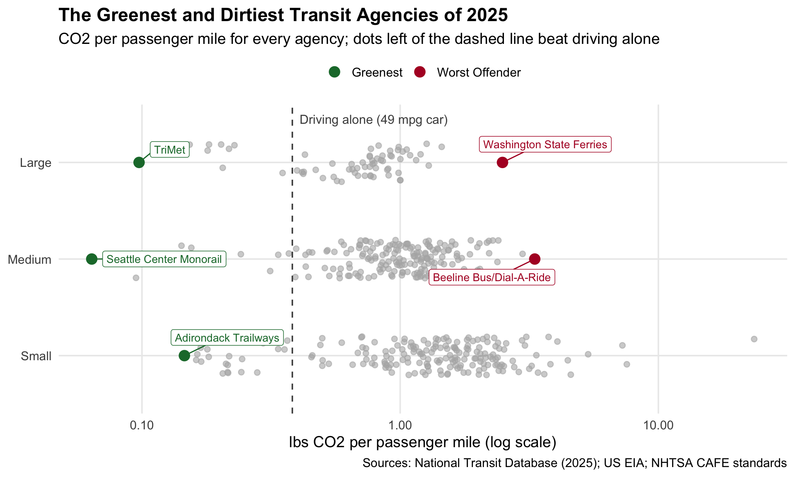

load_ntd_energy <-function(){library(readxl)library(httr2)library(tidyverse)library(fs)# Create 'data/mp02' directory if not already present DATA_DIR <- fs::path("data", "mp02") fs::dir_create(DATA_DIR, recurse=TRUE) NTD_ENERGY_FILE <- fs::path(DATA_DIR, "2025_ntd_energy.xlsx")if(!fs::file_exists(NTD_ENERGY_FILE)){library(httr2)request("https://www.transit.dot.gov/") |>req_url_path("sites","fta.dot.gov","files","2026-09","2025 Energy Consumption_260806.xlsx") |>req_headers(`User-Agent`="Mozilla/5.0 (Macintosh; Intel Mac OS X 10.15; rv:149.0) Gecko/20100101 Firefox/149.0") |>req_perform(NTD_ENERGY_FILE) }if(file.info(NTD_ENERGY_FILE)$size <1e4){cat("I was unable to download the NTD Energy File. Please try again.\n")stop("Download failed. Please delete the corrupted file by running `unlink('data/mp02/2025_ntd_energy.xlsx')` and try again.") } to_numeric_fill_0 <-function(x){ x <-if_else(x =="-", NA, x)replace_na(as.numeric(x), 0) }read_excel(NTD_ENERGY_FILE) |>select(-c(`Reporter Type`, `Reporting Module`, `Gallons of Other Fuel`, `Other Fuel Description`)) |>mutate(across(-c(`Agency Name`, `Mode`,`TOS`), to_numeric_fill_0)) |>group_by(`NTD ID`, `Mode`, `Agency Name`) |>summarize(across(where(is.numeric), sum), .groups ="keep") |>mutate(ENERGY =sum(c_across(c(where(is.numeric))))) |>filter(ENERGY >0) |>select(-ENERGY) |>ungroup()}NTD_ENERGY <-load_ntd_energy()
the description column was dropped from the calculation because it describes the fuel rather than measuring it.
Show code
load_ntd_service <-function(){library(httr2)library(tidyverse)library(fs)# Create 'data/mp02' directory if not already present DATA_DIR <- fs::path("data", "mp02") fs::dir_create(DATA_DIR, recurse=TRUE) NTD_SERVICE_FILE <- fs::path(DATA_DIR, "2025_ntd_service.csv")if(!fs::file_exists(NTD_SERVICE_FILE)){library(httr2)request("https://data.transportation.gov/resource/4fir-qbim.csv") |>req_url_query(`$query`=paste("SELECT `_5_digit_ntd_id` AS `NTD_ID`", "`max_agency` AS `AGENCY`","`max_reporter_type` AS `reporter_type`","`max_organization_type` AS `organization_type`","`max_city` AS `city`","`max_state` AS `state`","`mode`","`type_of_service`","`max_primary_uza_code` as `uza_code`","`max_primary_uza_name` as `uza_name`","`max_primary_uza_area_sq_miles` as `uza_sq_miles`","`max_primary_uza_population` as `uza_population`","`max_service_area_sq_miles` as `service_area_sq_miles`","`max_service_area_population` as `service_area_population`","`questionable_record` as `flagged_likely_inaccurate`","`sum_unlinked_passenger_trips_upt` as `total_upt`","`sum_passenger_miles` WHERE caseless_one_of(`report_year`, '2025') limit 50000", sep=",")) |>req_headers(`User-Agent`="Mozilla/5.0 (Macintosh; Intel Mac OS X 10.15; rv:149.0) Gecko/20100101 Firefox/149.0") |>req_perform(NTD_SERVICE_FILE) }if(file.info(NTD_SERVICE_FILE)$size <1e4){cat("I was unable to download the NTD Service File. Please try again.\n")stop("Download failed. Please delete the corrupted file by running `unlink('data/mp02/2025_ntd_service.xlsx')` and try again.") }read_csv(NTD_SERVICE_FILE) |>mutate(flagged_likely_inaccurate =!is.na(flagged_likely_inaccurate))}NTD_SERVICE <-load_ntd_service()
Data Cleaning and Preparation
Recoding Transit Modes
Show code
# Translate NTD two-letter mode codes into readable names.# Defined once as a function so both NTD tables are recoded identically.recode_mode <-function(x) {recode_values(x,"AR"~"Alaska Railroad","CB"~"Commuter Bus","CC"~"Cable Car","CR"~"Commuter Rail","DR"~"Demand Response","FB"~"Ferryboat","HR"~"Heavy Rail","IP"~"Inclined Plane","LR"~"Light Rail","MB"~"Bus","MG"~"Monorail / Automated Guideway","RB"~"Bus Rapid Transit","SR"~"Streetcar Rail","TB"~"Trolleybus","TR"~"Aerial Tramway","VP"~"Vanpool","YR"~"Hybrid Rail",default ="Unknown" )}NTD_SERVICE <- NTD_SERVICE |>mutate(mode =recode_mode(mode))
EIA_SEP_REPORT |>slice_max(electricity_price_MWh, n =5) |>ggplot(aes(x = electricity_price_MWh,y =fct_reorder(state, electricity_price_MWh) )) +geom_col(fill ="#2c7a4b", width =0.7) +geom_text(aes(label = scales::dollar(electricity_price_MWh)),hjust =-0.15, size =4.5 ) +scale_x_continuous(labels = scales::label_dollar(),expand =expansion(mult =c(0, 0.15)) ) +labs(title ="Five Most Expensive States for Retail Electricity",x ="Average retail price per MWh",y =NULL,caption ="Source: US Energy Information Administration, State Electricity Profiles" ) +theme_minimal(base_size =14) +theme(panel.grid.major.y =element_blank(),plot.title =element_text(face ="bold") )
Figure 1
Dirtiest Electricity Mix
Show code
EIA_SEP_REPORT |>slice_max(CO2_MWh, n =5) |>select(state, primary_source, CO2_MWh) |>gt() |>cols_label(state ="State",primary_source ="Primary Source",CO2_MWh ="CO\u2082 Emitted (lbs per MWh)" ) |>fmt_number(columns = CO2_MWh, decimals =0) |>data_color(columns = CO2_MWh,palette =c("#fcbba1", "#a50f15") ) |>tab_header(title ="Five States with the Dirtiest Electricity") |>tab_source_note("Source: US Energy Information Administration, State Electricity Profiles")
Table 1
Five States with the Dirtiest Electricity
State
Primary Source
CO₂ Emitted (lbs per MWh)
West Virginia
Coal
1,912
Kentucky
Coal
1,744
Wyoming
Coal
1,724
Missouri
Coal
1,456
Hawaii
Petroleum
1,426
Source: US Energy Information Administration, State Electricity Profiles
National Average Emissions
The Calculation
Show code
# Weight each state's emissions rate by how much electricity it generatesus_avg_co2 <- EIA_SEP_REPORT |>summarize(avg =weighted.mean(CO2_MWh, w = generation_MWh)) |>pull(avg)# Unweighted average, for comparisonus_simple_avg_co2 <-mean(EIA_SEP_REPORT$CO2_MWh)
The average CO₂ emissions rate from US electricity generation, weighted by how much electricity each state produces, was 785 pounds of CO₂ per MWh. This means that the average emissions rate reflects the electricity generated across the country rather than treating every state equally. Compared with the cleanest and dirtiest states in the dataset, this national average provides a useful benchmark for understanding differences in electricity-related emissions.
Rarest Energy Sources
Show code
# Find the 3 primary sources used by the fewest statesrarest_sources <- EIA_SEP_REPORT |>count(primary_source) |>slice_min(n, n =3, with_ties =FALSE) |>pull(primary_source)EIA_SEP_REPORT |>filter(primary_source %in% rarest_sources) |>group_by(primary_source) |>summarize(n_states =n(),states =paste(sort(state), collapse =", "),avg_price =mean(electricity_price_MWh) ) |>arrange(n_states) |>gt() |>cols_label(primary_source ="Primary Source",n_states ="Number of States",states ="States",avg_price ="Avg. Retail Price (per MWh)" ) |>fmt_currency(columns = avg_price, currency ="USD") |>tab_header(title ="The Three Rarest Primary Energy Sources") |>tab_source_note("Source: US Energy Information Administration, State Electricity Profiles")
Table 2
The Three Rarest Primary Energy Sources
Primary Source
Number of States
States
Avg. Retail Price (per MWh)
Petroleum
1
Hawaii
$380.00
Hydroelectric
4
Idaho, Oregon, Vermont, Washington
$122.90
Wind
4
Iowa, Kansas, New Mexico, South Dakota
$101.50
Source: US Energy Information Administration, State Electricity Profiles
Texas vs. New York
Show code
tx_co2 <- EIA_SEP_REPORT |>filter(abbreviation =="TX") |>pull(CO2_MWh)ny_co2 <- EIA_SEP_REPORT |>filter(abbreviation =="NY") |>pull(CO2_MWh)# How many times more CO2 Texas emits per MWh than New Yorktx_ny_ratio <- tx_co2 / ny_co2
Texas produces 1.5 times as much CO₂ per MWh of electricity as New York. This means New York’s electricity generation is substantially cleaner than Texas’s.
Transit Service
Busiest Transit Services
Show code
NTD_SERVICE |># Combine directly operated + purchased service for each agency + modegroup_by(NTD_ID, AGENCY, city, mode) |>summarize(total_upt =sum(total_upt), .groups ="drop") |>slice_max(total_upt, n =5) |>mutate(# Shorten names like "King County, dba: King County Metro"agency_short =str_remove(AGENCY, ".*dba:\\s*"),label =str_glue("{agency_short} ({city}): {mode}") ) |>ggplot(aes(x = total_upt, y =fct_reorder(label, total_upt))) +geom_col(fill ="#2c7a4b", width =0.7) +geom_text(aes(label = scales::label_number(scale_cut = scales::cut_short_scale(),accuracy =0.1 )(total_upt)),hjust =-0.15, size =4.5 ) +scale_x_continuous(labels = scales::label_number(scale_cut = scales::cut_short_scale()),expand =expansion(mult =c(0, 0.15)) ) +scale_y_discrete(labels = scales::label_wrap(30)) +labs(title ="Five Busiest Transit Services in the US",x ="Unlinked passenger trips (2025)",y =NULL,caption ="Source: National Transit Database, 2025 Service by Agency" ) +theme_minimal(base_size =14) +theme(panel.grid.major.y =element_blank(),plot.title =element_text(face ="bold") )

Figure 2
States with the Least Transit Travel
Show code
# Passenger miles by state (50 states only), tracking how many# services actually reported miles. Smaller "Reduced" and "Rural"# reporters are not required to report passenger miles.miles_by_state <- NTD_SERVICE |>filter(state %in% state.abb) |>group_by(state) |>summarize(total_miles =sum(sum_passenger_miles, na.rm =TRUE),n_reported =sum(!is.na(sum_passenger_miles)),.groups ="drop" ) |>mutate(state_name = state.name[match(state, state.abb)])# States where no agency reported passenger milesno_miles_states <- miles_by_state |>filter(n_reported ==0) |>pull(state_name)miles_by_state |>filter(n_reported >0) |>slice_min(total_miles, n =5) |>ggplot(aes(x = total_miles,y =reorder(state_name, -total_miles) )) +geom_col(fill ="#b5651d", width =0.7) +geom_text(aes(label = scales::label_number(scale_cut = scales::cut_short_scale(),accuracy =0.1 )(total_miles)),hjust =-0.15, size =4.5 ) +scale_x_continuous(labels = scales::label_number(scale_cut = scales::cut_short_scale()),expand =expansion(mult =c(0, 0.15)) ) +labs(title ="Five States with the Least Public Transit Travel",x ="Total passenger miles (2025)",y =NULL,caption =str_glue("Source: National Transit Database, 2025 Service by Agency\n","Excluded (no agency reported passenger miles): ","{str_flatten_comma(no_miles_states)}" ) ) +theme_minimal(base_size =14) +theme(panel.grid.major.y =element_blank(),plot.title =element_text(face ="bold"),plot.caption =element_text(hjust =0) )

Figure 3
State Coverage
Show code
# 50 states with no transit service in the NTD datamissing_states <- state.name[!state.abb %in% NTD_SERVICE$state]# Regions in the NTD data that are not one of the 50 states (DC, territories)extra_regions <- NTD_SERVICE |>distinct(state) |>filter(!state %in% state.abb) |>pull(state) |>sort()# Readable names for the non-state regionsregion_names <-c(AS ="American Samoa", DC ="District of Columbia", GU ="Guam",MP ="Northern Mariana Islands", PR ="Puerto Rico", VI ="US Virgin Islands")extra_region_names <-unname(region_names[extra_regions])
The NTD data cover all 50 states and include 6 additional regions: American Samoa, District of Columbia, Guam, Northern Mariana Islands, Puerto Rico, US Virgin Islands. However, these regions will be excluded from the emissions analysis because the EIA dataset covers only the 50 states.
Data Analysis
Calculating Emissions
Preparing Service Data
Show code
# Collapse service to one row per agency + mode# (combining directly operated and purchased transportation)SERVICE_AGG <- NTD_SERVICE |>group_by(NTD_ID, AGENCY, city, state, uza_name, mode) |>summarize(total_upt =sum(total_upt, na.rm =TRUE),total_miles =sum(sum_passenger_miles, na.rm =TRUE),miles_reported =any(!is.na(sum_passenger_miles)),any_flagged =any(flagged_likely_inaccurate),.groups ="drop" )
Combining the Data
Show code
# Energy: match the service table's ID format ("00001") and column namesENERGY_CLEAN <- NTD_ENERGY |>mutate(NTD_ID =sprintf("%05d", as.integer(`NTD ID`))) |>select(-`NTD ID`, -`Agency Name`, -`Bio-Diesel Description`) |>rename(mode = Mode)# EIA: keep only what the emissions calculation needsEIA_CO2 <- EIA_SEP_REPORT |>select(abbreviation, CO2_MWh)# One row per agency + mode with service, fuel use, and grid emissionsEMISSIONS_BASE <- SERVICE_AGG |>inner_join(ENERGY_CLEAN,join_by(NTD_ID, mode),relationship ="one-to-one") |>inner_join(EIA_CO2,join_by(state == abbreviation),relationship ="many-to-one")
Emissions per Agency and Mode
Show code
# Pounds of CO2 per unit of fuel (EIA, plus documented assumptions)LBS_CO2 <-c(diesel =22.45, # per gallon, distillate fuel oilgasoline =18.73, # per gallon, finished motor gasolinekerosene =21.78, # per gallonlpg =12.68, # per gallon, propanebunker =24.78, # per gallon, residual fuel oilbiodiesel =22.45, # per gallon, assumed equal to diesel (conservative)ethanol =3.13, # per gallon, assumed E85 (15% gasoline share)cng =15.31, # per gasoline gallon equivalentlng =9.89, # per gallonhydrogen =0# per kg, no tailpipe CO2)EMISSIONS <- EMISSIONS_BASE |>mutate(# Direct (tailpipe) emissions from combustion fuelsco2_fuel_lbs =`Gallons of Diesel Fuel`* LBS_CO2["diesel"] +`Gallons of Gasoline`* LBS_CO2["gasoline"] +`Gallons of Kerosene`* LBS_CO2["kerosene"] +`Gallons of Liquified Petroleum Gas`* LBS_CO2["lpg"] +`Gallons of Bunker Fuel`* LBS_CO2["bunker"] +`Gallons of Bio-Diesel`* LBS_CO2["biodiesel"] +`Gallons of Ethanol`* LBS_CO2["ethanol"] +`Gallons of Compressed Natural Gas`* LBS_CO2["cng"] +`Gallons of Liquified Nat Gas`* LBS_CO2["lng"] +`Kilograms of Hydrogen`* LBS_CO2["hydrogen"],# Upstream emissions from electricity (kWh -> MWh x state rate)co2_elec_lbs = (`Kilowatt hours of Electric Battery`+`Kilowatt hours of Electric Propulsion`) /1000* CO2_MWh,total_co2_lbs = co2_fuel_lbs + co2_elec_lbs,total_co2_tons = total_co2_lbs /2000 )
Emissions per Rider
Show code
# Combine modes into one row per agency, then normalize by usage.# Exclude NTD-flagged records and agencies with unreported miles,# since either would distort per-trip or per-mile figures.AGENCY_EMISSIONS <- EMISSIONS |>filter(!any_flagged) |>group_by(NTD_ID, AGENCY, city, state) |>summarize(total_co2_lbs =sum(total_co2_lbs),co2_elec_lbs =sum(co2_elec_lbs),total_upt =sum(total_upt),total_miles =sum(total_miles),miles_complete =all(miles_reported),n_modes =n(),.groups ="drop" ) |>filter(miles_complete, total_upt >0, total_miles >0) |>mutate(agency_short =str_remove(AGENCY, ".*dba:\\s*"),co2_per_upt = total_co2_lbs / total_upt,co2_per_mile = total_co2_lbs / total_miles )
Show code
# Exclude very small agencies, then assign award size categoriesAGENCY_EMISSIONS <- AGENCY_EMISSIONS |>filter(total_upt >=100000) |>mutate(size =case_when( total_upt <1e6~"Small", total_upt <1e7~"Medium",TRUE~"Large" ),size =factor(size, levels =c("Small", "Medium", "Large")) )
Award Winners
Greenest Agency
Show code
# Lowest CO2 per passenger mile in each size category,# compared with the median agency of the same sizeGREENEST <- AGENCY_EMISSIONS |>group_by(size) |>mutate(median_per_mile =median(co2_per_mile)) |>slice_min(co2_per_mile, n =1) |>ungroup() |>mutate(times_cleaner = median_per_mile / co2_per_mile)GREENEST |>select(size, agency_short, city, state, co2_per_mile, median_per_mile, times_cleaner) |>gt() |>cols_label(size ="Category",agency_short ="Agency",city ="City",state ="State",co2_per_mile ="Winner (lbs CO\u2082 / passenger mile)",median_per_mile ="Median Agency",times_cleaner ="Times Cleaner" ) |>fmt_number(columns =c(co2_per_mile, median_per_mile), decimals =3) |>fmt_number(columns = times_cleaner, decimals =1, pattern ="{x}\u00d7") |>tab_header(title ="Greenest Transit Agencies of 2025") |>tab_source_note("Sources: National Transit Database (2025); US Energy Information Administration" )
Greenest Transit Agencies of 2025
Category
Agency
City
State
Winner (lbs CO₂ / passenger mile)
Median Agency
Times Cleaner
Small
Adirondack Trailways
Hurley
NY
0.146
1.431
9.8×
Medium
Seattle Center Monorail
Seattle
WA
0.064
1.052
16.5×
Large
TriMet
Portland
OR
0.097
0.768
7.9×
Sources: National Transit Database (2025); US Energy Information Administration
Most Emissions Avoided
Show code
# Fuel economy of the counterfactual car (NHTSA CAFE target, MY2026).# Generous to cars: real-world mpg is lower, so savings are conservative.CAFE_MPG <-49AGENCY_EMISSIONS <- AGENCY_EMISSIONS |>mutate(# CO2 if every passenger mile had been driven alone in a cardriving_co2_lbs = total_miles / CAFE_MPG * LBS_CO2["gasoline"],avoided_co2_lbs = driving_co2_lbs - total_co2_lbs,avoided_tons = avoided_co2_lbs /2000 )MOST_AVOIDED <- AGENCY_EMISSIONS |>group_by(size) |>mutate(median_avoided =median(avoided_tons)) |>slice_max(avoided_tons, n =1) |>ungroup()MOST_AVOIDED |>select(size, agency_short, city, state, avoided_tons, median_avoided) |>gt() |>cols_label(size ="Category",agency_short ="Agency",city ="City",state ="State",avoided_tons ="CO\u2082 Avoided (tons)",median_avoided ="Median Agency (tons)" ) |>fmt_number(columns =c(avoided_tons, median_avoided), decimals =0) |>tab_header(title ="Most Emissions Avoided in 2025") |>tab_source_note("Assumes each passenger mile replaces a solo car trip at 49 mpg (NHTSA CAFE, MY2026). Sources: NTD (2025); EIA; NHTSA" )
Most Emissions Avoided in 2025
Category
Agency
City
State
CO₂ Avoided (tons)
Median Agency (tons)
Small
Hampton Jitney, Inc.
Calverton
NY
6,357
−1,177
Medium
CalVans
Visalia
CA
12,088
−3,446
Large
MTA New York City Transit
Brooklyn
NY
954,036
−20,185
Assumes each passenger mile replaces a solo car trip at 49 mpg (NHTSA CAFE, MY2026). Sources: NTD (2025); EIA; NHTSA
Worst Offender
Show code
# Pounds of CO2 per mile for a solo car at the CAFE targetCAR_LBS_PER_MILE <- LBS_CO2["gasoline"] / CAFE_MPG# Highest CO2 per passenger mile among Medium and Large agenciesWORST <- AGENCY_EMISSIONS |>filter(size %in%c("Medium", "Large")) |>group_by(size) |>mutate(median_per_mile =median(co2_per_mile)) |>slice_max(co2_per_mile, n =1) |>ungroup() |>mutate(times_car = co2_per_mile / CAR_LBS_PER_MILE)WORST |>select(size, agency_short, city, state, co2_per_mile, median_per_mile, times_car) |>gt() |>cols_label(size ="Category",agency_short ="Agency",city ="City",state ="State",co2_per_mile ="lbs CO\u2082 / passenger mile",median_per_mile ="Median Agency",times_car ="vs. Driving Alone" ) |>fmt_number(columns =c(co2_per_mile, median_per_mile), decimals =2) |>fmt_number(columns = times_car, decimals =1, pattern ="{x}\u00d7") |>tab_header(title ="Worst Offenders of 2025") |>tab_source_note("Driving benchmark: solo car at 49 mpg (NHTSA CAFE, MY2026). Sources: NTD (2025); EIA; NHTSA" )
Worst Offenders of 2025
Category
Agency
City
State
lbs CO₂ / passenger mile
Median Agency
vs. Driving Alone
Medium
Beeline Bus/Dial-A-Ride
Glendale
CA
3.32
1.05
8.7×
Large
Washington State Ferries
Olympia
WA
2.49
0.77
6.5×
Driving benchmark: solo car at 49 mpg (NHTSA CAFE, MY2026). Sources: NTD (2025); EIA; NHTSA
Press Release Graphics
Show code
library(ggrepel)# Mark which agencies won Greenest or Worst Offenderhighlight <-bind_rows( GREENEST |>mutate(award ="Greenest"), WORST |>mutate(award ="Worst Offender")) |>select(NTD_ID, award)plot_data <- AGENCY_EMISSIONS |>left_join(highlight, join_by(NTD_ID)) |>mutate(award =replace_na(award, "Other agencies"))others <- plot_data |>filter(award =="Other agencies")winners <- plot_data |>filter(award !="Other agencies")set.seed(9750) # keeps the dot scatter identical on every renderggplot(plot_data, aes(x = co2_per_mile, y = size)) +# All other agencies as faint grey dotsgeom_jitter(data = others, height =0.2, width =0,colour ="grey70", alpha =0.6, size =2) +# Car benchmark linegeom_vline(xintercept =unname(CAR_LBS_PER_MILE),linetype ="dashed", colour ="grey30") +annotate("text", x =unname(CAR_LBS_PER_MILE), y =3.45,label ="Driving alone (49 mpg car)",hjust =-0.05, size =4, colour ="grey30") +# Award winners, highlighted and labelledgeom_point(data = winners, aes(colour = award), size =4) +geom_label_repel(data = winners,aes(label = agency_short, colour = award),size =3.5, show.legend =FALSE,min.segment.length =0, box.padding =0.6) +scale_x_log10(labels = scales::label_number(accuracy =0.01)) +scale_colour_manual(values =c("Greenest"="#1b7837","Worst Offender"="#b2182b")) +labs(title ="The Greenest and Dirtiest Transit Agencies of 2025",subtitle ="CO2 per passenger mile for every agency; dots left of the dashed line beat driving alone",x ="lbs CO2 per passenger mile (log scale)",y =NULL,colour =NULL,caption ="Sources: National Transit Database (2025); US EIA; NHTSA CAFE standards" ) +theme_minimal(base_size =14) +theme(legend.position ="top",plot.title =element_text(face ="bold"),panel.grid.minor =element_blank() )

Figure 4
Show code
AGENCY_EMISSIONS |>slice_max(avoided_tons, n =10) |>mutate(label =str_glue("{agency_short} ({state})")) |>ggplot(aes(x = avoided_tons, y =reorder(label, avoided_tons), fill = size)) +geom_col(width =0.7) +geom_text(aes(label = scales::label_number(scale_cut = scales::cut_short_scale(),accuracy =1 )(avoided_tons)),hjust =-0.1, size =4 ) +scale_x_continuous(labels = scales::label_number(scale_cut = scales::cut_short_scale()),expand =expansion(mult =c(0, 0.12)) ) +scale_y_discrete(labels = scales::label_wrap(35)) +scale_fill_manual(values =c("Small"="#a6dba0","Medium"="#5aae61","Large"="#1b7837")) +labs(title ="Transit Agencies That Saved the Most CO2 in 2025",subtitle ="Tons of CO2 avoided compared with every rider driving alone in a 49 mpg car",x ="Tons of CO2 avoided",y =NULL,fill ="Agency size",caption ="Sources: National Transit Database (2025); US EIA; NHTSA CAFE standards" ) +theme_minimal(base_size =14) +theme(legend.position ="top",plot.title =element_text(face ="bold"),panel.grid.major.y =element_blank(),panel.grid.minor =element_blank() )